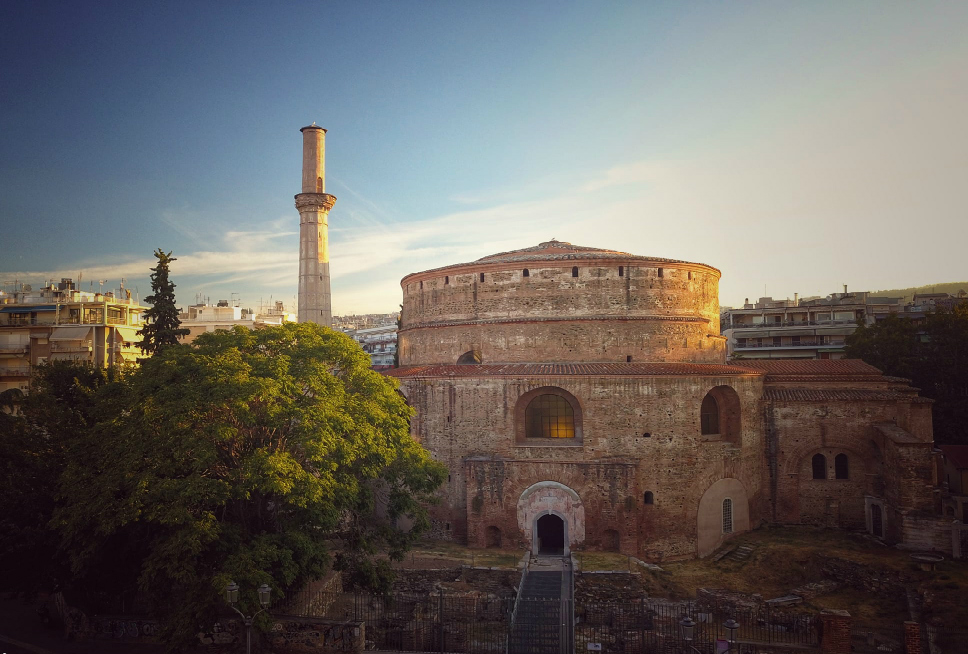

H Ροτόντα είναι θολωτό κυκλικό κτίσμα του 4ου αιώνα στη Θεσσαλονίκη, παρόμοιο με το Πάνθεον της Ρώμης. Η αρχική χρήση του δεν είναι γνωστή αλλά διατυπώθηκαν ως τώρα διάφορες υποθέσεις: ότι υπήρξε ναός του Διός, ή των Καβείρων, ότι κατασκευάστηκε από τον Καίσαρα Γαλέριο ως μαυσωλείο του, ή ως αίθουσα του θρόνου στο ανακτορικό συγκρότημα. Λόγω της μη χρήσης του, μετατράπηκε επί βυζαντίου σε χριστιανικό ναό των Ασωμάτων Δυνάμεων και μετά την Απελευθέρωση της Θεσσαλονίκης, το 1912, αφιερώθηκε στον Άγιο Γεώργιο. Συμπεριλαμβάνεται στα Παλαιοχριστιανικά και Βυζαντινά μνημεία της Θεσσαλονίκης ως Μνημείο Παγκόσμιας Κληρονομιάς της UNESCOΗ Ροτόντα ανήκει στα περίκεντρα οικοδομήματα, στο κυκλικό της σχήμα άλλωστε οφείλει και την ονομασία της. Κτίστηκε στα χρόνια του καίσαρα Γαλερίου